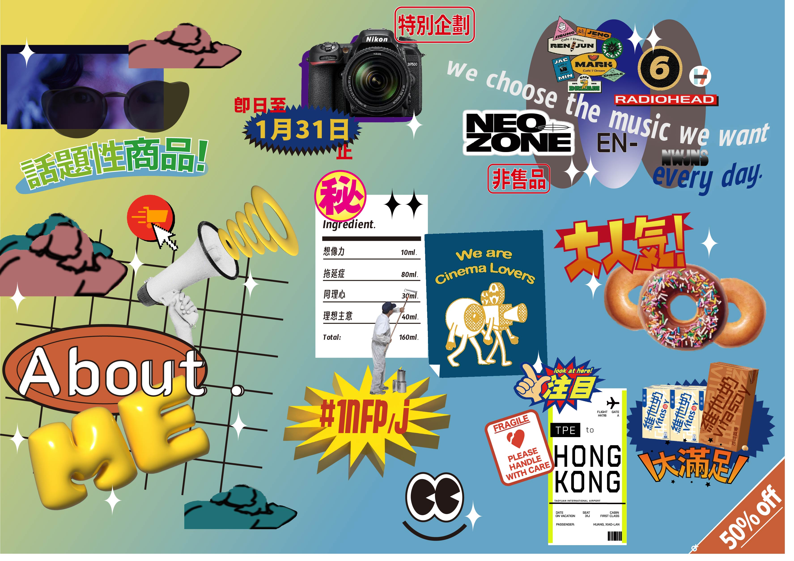
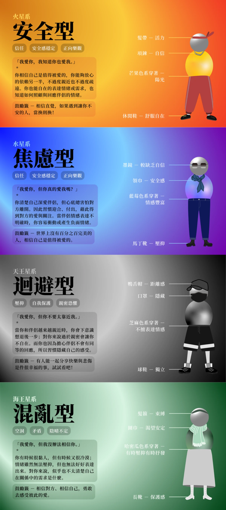

創作主題是採用超市傳單海報風格＋美式復古、九零年代、拼貼風，3D字體結合誇張標價格字體，眼花撩亂之外也表示我腦袋的世界是呈現一種亂中有序（？）的狀態，在我喜歡的攝影、音樂風格、甜甜圈，還有童年最愛的飲料維他奶旁加上那種花字體，有種在推銷自己喜歡的東西的感覺。我的成分表上標示「秘」有諧音「Me」和秘密洩漏兩種含義，機票日期上寫「假期」是因為我寒暑假常和家人回去探親。
作品集
sweet island｜數位影像設計
使用工具：PS
創作理念是想像自己身處於被縮小的世界中，當蛋糕這種食物變成一座島，會發生什麼事？
我還特別將兩人用叉子放上島嶼，代表在這個世界上有比人類更龐大的生物，但可以從人的表情上來看，表現出他們都已經習以為常的感覺。還有天上的鳥類正在運送蛋糕，增添畫面的動態及趣味性。

今日特價超值大包裝｜數位影像設計
使用工具：AI /PS
創作主題是採用超市傳單海報風格＋美式復古、九零年代、拼貼風，3D字體結合誇張標價格字體，眼花撩亂之外也表示我腦袋的世界是呈現一種亂中有序（？）的狀態，在我喜歡的攝影、音樂風格、甜甜圈，還有童年最愛的飲料維他奶旁加上那種花字體，有種在推銷自己喜歡的東西的感覺。我的成分表上標示「秘」有諧音「Me」和秘密洩漏兩種含義，機票日期上寫「假期」是因為我寒暑假常和家人回去探親。

我的內在小孩-依附類型心理測驗
｜創意與設計
使用工具：AI / ooopenlab
個人基於不同的童年經歷都會培養出不同的依附關係類型，然而我們往往無法清晰指認出自己在關係中的行為思考從何而來，因此了解自身的依附關係類型傾向哪種，將有助我們在關係中找到定位與解方。
我們的目標受眾是「有興趣發掘自我、喜歡心理測驗」的人們，期望他們在我們的心理測驗中，能夠知曉自己的依附類型，甚至重新審視童年時期與主要照顧者的互動，重塑自身內的人格脈絡。
此外，雖然依附關係類型的心理測驗在網路上並不少見，然而多數仍是以四分法分類受試者。但事實上，
一個人的依附關係風格是「象限上的一點」，每個人都有獨一無二的光譜分佈。因此我們想以不同的「穿搭造型」加上顏色輔助表達各個依附類型的特
性，來顯示受試者的相對且多元的依附風格。

sweet island｜數位影像設計
使用工具：PS
創作理念是想像自己身處於被縮小的世界中，當蛋糕這種食物變成一座島，會發生什麼事？ 我還特別將兩人用叉子放上島嶼，代表在這個世界上有比人類更龐大的生物，但可以從人的表情上來看，表現出他們都已經習以為常的感覺。還有天上的鳥類正在運送蛋糕，增添畫面的動態及趣味性。
今日特價超值大包裝
｜數位影像設計
使用工具：AI /PS
我的內在小孩-依附類型心理測驗
｜創意與設計
使用工具：AI / ooopenlab
個人基於不同的童年經歷都會培養出不同的依附關係類型，然而我們往往無法清晰指認出自己在關係中的行為思考從何而來，因此了解自身的依附關係類型傾向哪種，將有助我們在關係中找到定位與解方。
我們的目標受眾是「有興趣發掘自我、喜歡心理測驗」的人們，期望他們在我們的心理測驗中，能夠知曉自己的依附類型，甚至重新審視童年時期與主要照顧者的互動，重塑自身內的人格脈絡。
此外，雖然依附關係類型的心理測驗在網路上並不少見，然而多數仍是以四分法分類受試者。但事實上，
一個人的依附關係風格是「象限上的一點」，每個人都有獨一無二的光譜分佈。因此我們想以不同的「穿搭造型」加上顏色輔助表達各個依附類型的特性，來顯示受試者的相對且多元的依附風格。